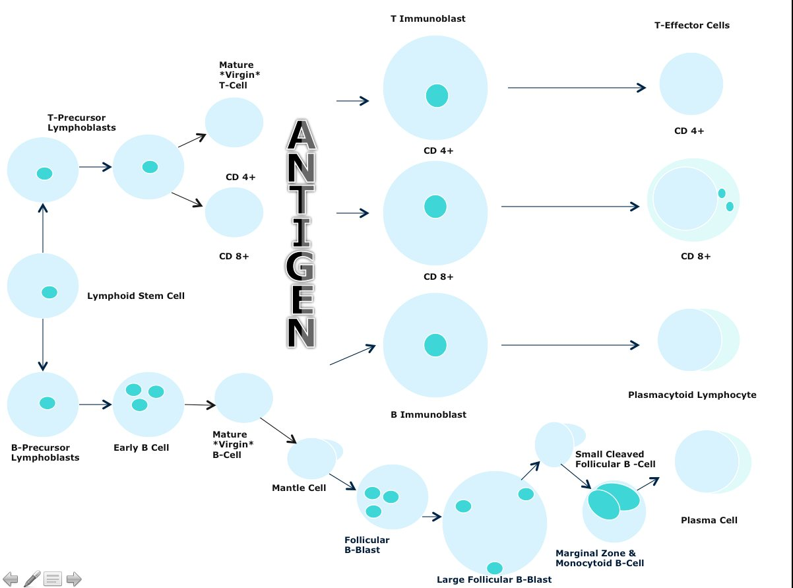
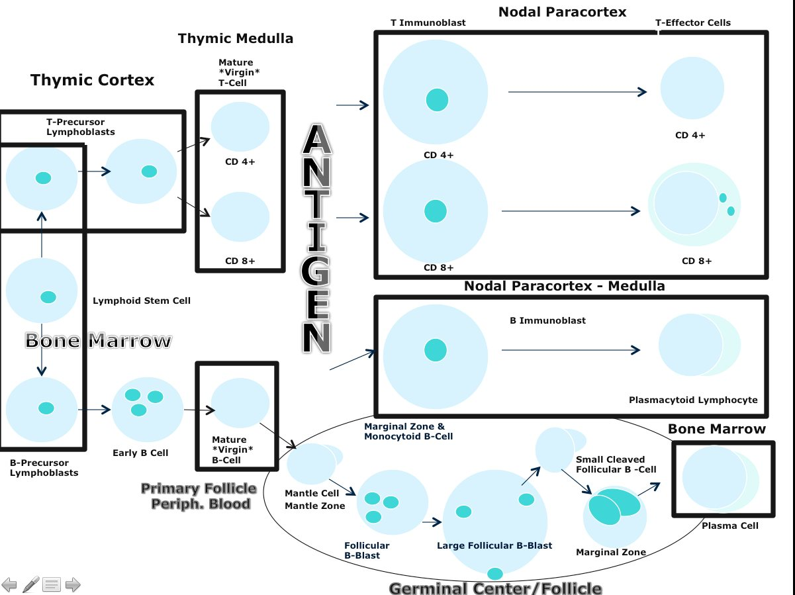
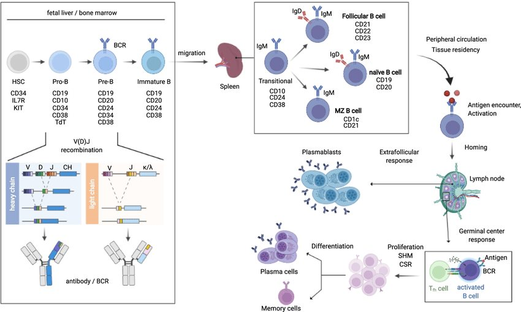
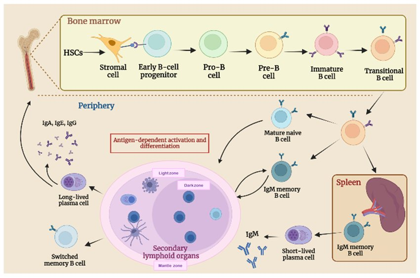
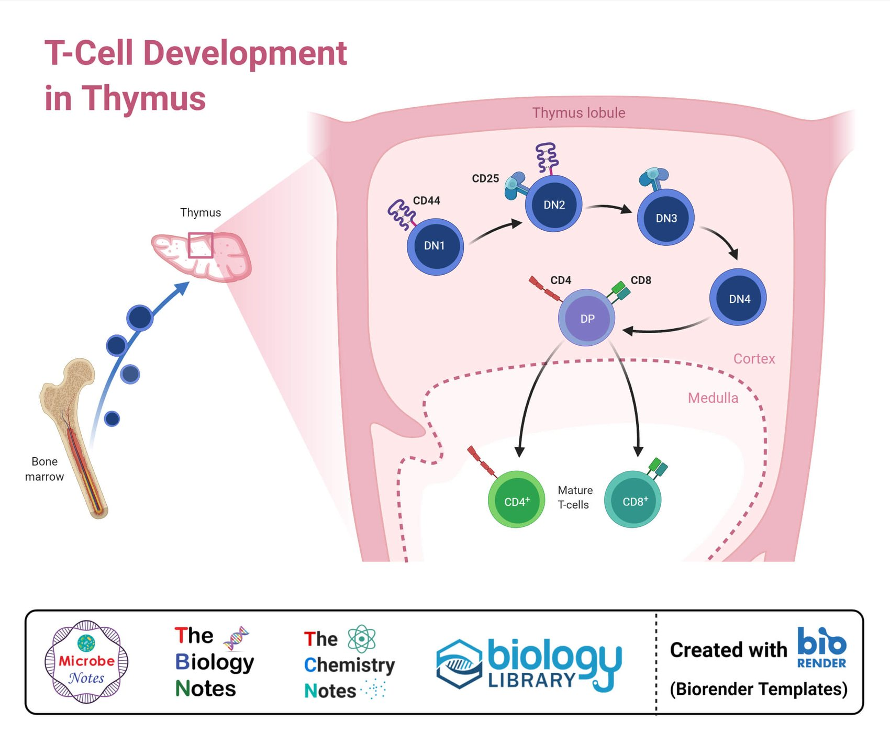

Where each lymphocyte comes from
Lymphoid cell development — and why it predicts the lymphomas
The reason to learn normal lymphocyte maturation is not immunology for its own sake. It is that every lymphoid neoplasm recapitulates the phenotype of the normal cell it came from. If you know where a normal cell lives and which markers it carries at that stage, you can predict where its tumor will present and what the flow cytometry will show.
Antigen-independent development
Happens largely during the fetal, neonatal and childhood periods for both B and T cells, and does not require ever having seen a foreign antigen.
- B cells: in the bone marrow. Stem cell → pro-B → pre-B → immature B → mature naive (“virgin”) B cell.
- T cells: in the thymus. Marrow stem cell migrates to the thymus → T-cell receptor gene rearrangement → selection → mature naive T cell.
- This is where the precursor (lymphoblastic) neoplasms arise — which is why B-lymphoblastic leukemia fills the marrow and T-lymphoblastic lymphoma presents as a thymic (mediastinal) mass.
Antigen-dependent development
Happens in secondary lymphoid tissue — the lymph node — after the naive cell meets its antigen.
- Naive B cells migrate to the node and undergo the germinal center reaction.
- Naive T cells undergo blast transformation to become CD4-positive helper or CD8-positive cytotoxic effector cells, plus memory cells.
- This is where the peripheral (mature) lymphomas arise — follicular, Burkitt, diffuse large B-cell, marginal zone, peripheral T-cell.


The B-cell pathway in detail
- Bone marrow: build a receptor without ever seeing an antigen.The B-cell receptor consists of a heavy chain and a light chain, generated by VDJ recombination — randomly assembling one V (variable), one D (diversity) and one J (joining) gene segment with a constant region for the heavy chain. Light chains use only V and J segments, with either a kappa or a lambda constant region. Randomness is the point: it generates the repertoire.
- Every stage carries its own set of surface markers.Pro-B, pre-B, immature B and mature B each have a characteristic marker combination. This is the whole basis of flow cytometry in B-lymphoblastic leukemia/lymphoma — the neoplastic blasts recapitulate the phenotype of their normal counterpart, so an abnormal combination that does not match any normal stage is itself evidence of a clone.
- Migrate to the lymph node and meet antigen.On antigen encounter an activated B cell takes one of two routes: a rapid extrafollicular response producing short-lived plasmablasts, or entry into the germinal center reaction in secondary lymphoid tissue.
- The germinal center reaction is T-cell assisted.It permits class switch recombination (changing the antibody isotype, e.g. IgM to IgG) and somatic hypermutation (refining affinity). Both processes deliberately break and re-ligate DNA — which is precisely why the germinal center is where most oncogenic translocations happen.
- Exit as a plasma cell or a memory B cell.Plasma cells migrate back to the bone marrow, take up residence alongside the marrow vessels, and secrete immunoglobulin from there. Memory B cells are generated in parallel and persist.


The T-cell pathway in detail

- Origin in the marrow, maturation in the thymus.T cells originate from hematopoietic stem cells in the bone marrow and then migrate to the thymus. Everything that follows happens there.
- T-cell receptor gene rearrangement.Thymocytes build a unique T-cell receptor by rearranging DNA segments — the same combinatorial logic as VDJ recombination in B cells. Detecting a single rearranged pattern shared by a whole population is how T-cell clonality studies prove a lymphoma.
- Positive selection.Thymocytes are exposed to major histocompatibility complex molecules on thymic stromal cells. Those that weakly recognize self-MHC receive survival signals and continue to mature; those that recognize nothing undergo apoptosis. The test is: can this receptor see anything at all?
- Negative selection.The survivors are then tested against self-antigens presented on MHC. Those that bind self too strongly are eliminated by apoptosis. The test is: is this receptor dangerous to its owner?
- Lineage commitment.Only after both selections does the thymocyte commit to the CD4 helper or the CD8 cytotoxic lineage.
During thymic development, thymocytes normally express BOTH CD4 and CD8 at the same time (the “double positive” stage) before committing to one lineage. No mature peripheral T cell does this. Therefore, when flow cytometry on a mediastinal mass shows a population co-expressing CD4 and CD8, you are looking at cells frozen at a thymic stage — a strong pointer to T-lymphoblastic leukemia/lymphoma. This is a favorite examination detail precisely because it is a normal-development fact that becomes a diagnostic one.
The payoff: mapping each neoplasm onto its normal counterpart
![Development diagram overlaid with the neoplasms arising at each stage: T-precursor and B-precursor acute lymphoblastic leukemia or lymphoblastic lymphoma at the precursor stages, cutaneous T-cell lymphoma and T-cell large granular lymphocytic leukemia from mature T cells, CLL SLL and mantle cell lymphoma from mature naive B cells, follicular center cell lymphomas including Burkitt and large B-cell lymphoma from the germinal center, marginal zone and monocytoid B-cell lymphomas, Waldenstrom macroglobulinemia and multiple myeloma from plasma cells](img/lymph-node/lymphocyte-neoplasms-map.jpg)
| Normal counterpart | Where it lives | Neoplasm(s) that arise there | Practical consequence |
|---|---|---|---|
| B-cell precursor | Bone marrow | B-lymphoblastic leukemia / lymphoma | Presents as marrow replacement, with or without circulating blasts |
| T-cell precursor | Thymus | T-lymphoblastic leukemia / lymphoma | Lymphoma form presents as a mediastinal (thymic) mass; may co-express CD4 and CD8 |
| Mature naive B cell (pre-germinal center) | Node: mantle zone and circulation | CLL/SLL, mantle cell lymphoma | Both are CD5 positive, CD10 negative |
| Germinal center B cell | Node: follicle | Follicular lymphoma, Burkitt lymphoma, many diffuse large B-cell lymphomas | All are CD10 positive, BCL6 positive — the germinal center signature |
| Marginal zone / memory B cell | Node: marginal zone; extranodal mucosa | Marginal zone lymphoma (nodal, splenic, extranodal / MALT) | CD5 negative AND CD10 negative — a diagnosis partly of exclusion |
| Plasma cell | Bone marrow, beside the vessels | Multiple myeloma, Waldenström macroglobulinemia (lymphoplasmacytic lymphoma) | Disease is caused by the secreted immunoglobulin, not the mass |
| Mature peripheral T cell | Node: paracortex; skin | Peripheral T-cell lymphomas, mycosis fungoides | Node shows paracortical expansion rather than follicles |
Q: A 14-year-old presents with a large anterior mediastinal mass and respiratory compromise. Flow cytometry of the biopsy shows an immature population co-expressing CD4 and CD8. What is the diagnosis, and what normal developmental fact explains the phenotype?
T-lymphoblastic lymphoma. The mass is in the mediastinum because that is where the thymus sits, and the thymus is where T cells undergo antigen-independent maturation. The phenotype is explained by the fact that normal developing thymocytes pass through a double-positive stage expressing both CD4 and CD8 before committing to a single lineage — the neoplasm is frozen at that stage. Remember the naming logic too: “-oma” means mass, so the lymphoma form presents as the thymic mass while the leukemic form fills the marrow.
Q: Why do so many oncogenic translocations in B-cell lymphomas involve the immunoglobulin heavy chain locus on chromosome 14?
Because the germinal center B cell deliberately breaks and re-joins the DNA at the immunoglobulin loci during class switch recombination and somatic hypermutation (and earlier, during VDJ recombination in the marrow). These are controlled double-strand breaks — but errors during them can join an oncogene to the transcriptionally hyperactive immunoglobulin heavy chain promoter, which then drives it permanently. That single mechanism explains t(14;18) BCL2 in follicular lymphoma, t(8;14) MYC in Burkitt lymphoma, and t(11;14) cyclin D1 in mantle cell lymphoma. Potentially oncogenic mutations occur most frequently in germinal center B cells for exactly this reason.
![Checklist slide for Kikuchi-Fujimoto disease listing clinical features young adults women more than men more common in Asia, cervical lymph nodes unilateral mild enlargement, mild fever weight loss night sweats sore throat arthromyalgias, self-limited course; and pathologic features paracortical location with architecture partially preserved, patchy areas of necrosis, marked single-cell apoptosis, abundant nuclear debris, infiltrate of nonphagocytic histiocytes with crescent-shaped nuclei, plasmacytoid dendritic cells, small lymphocytes and immunoblasts, absence of neutrophils and eosinophils, histiocytes CD68 and myeloperoxidase positive, CD8 T cells predominant, very few B cells, no monoclonality](img/lymph-node/kikuchi-fujimoto-checklist.jpg)